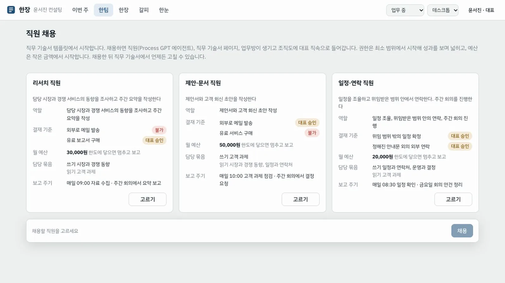
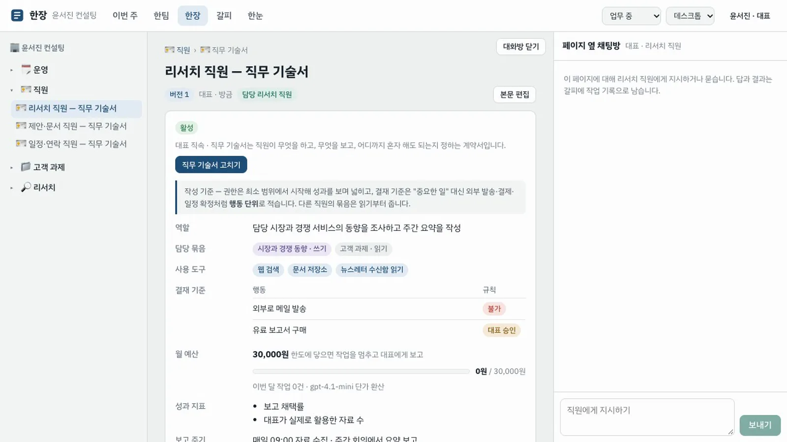
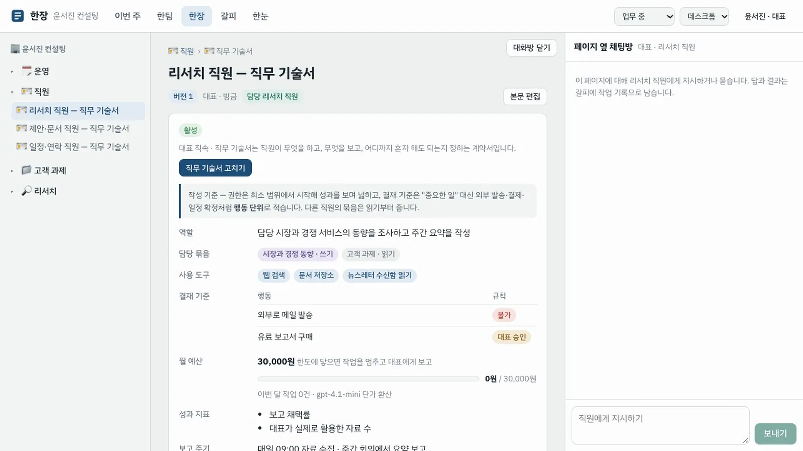
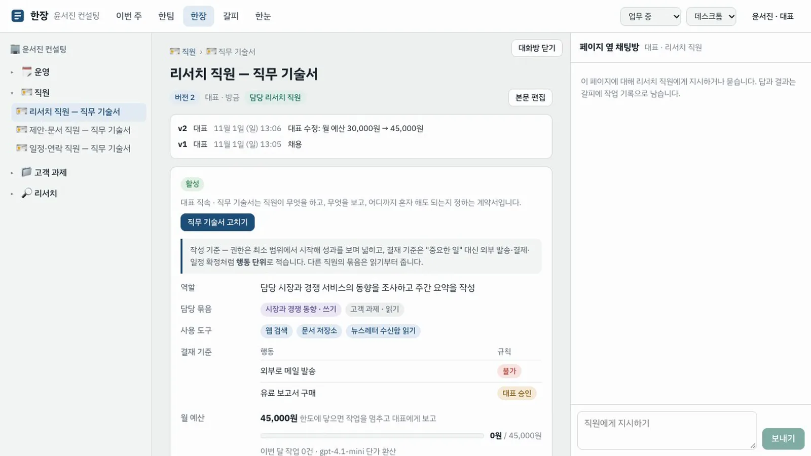
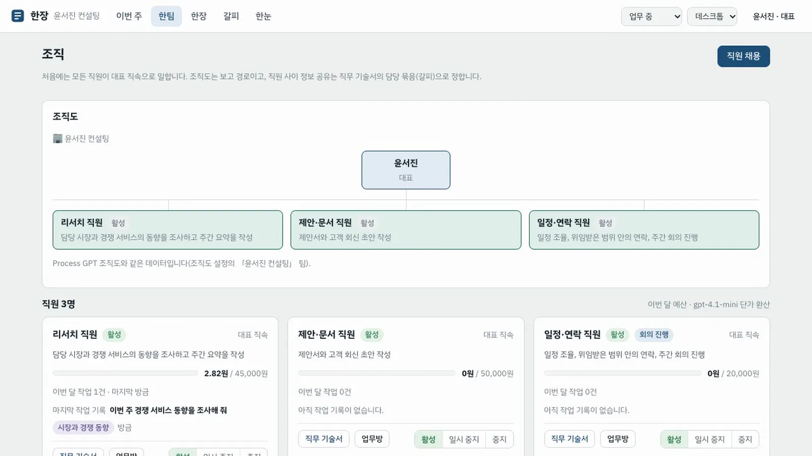
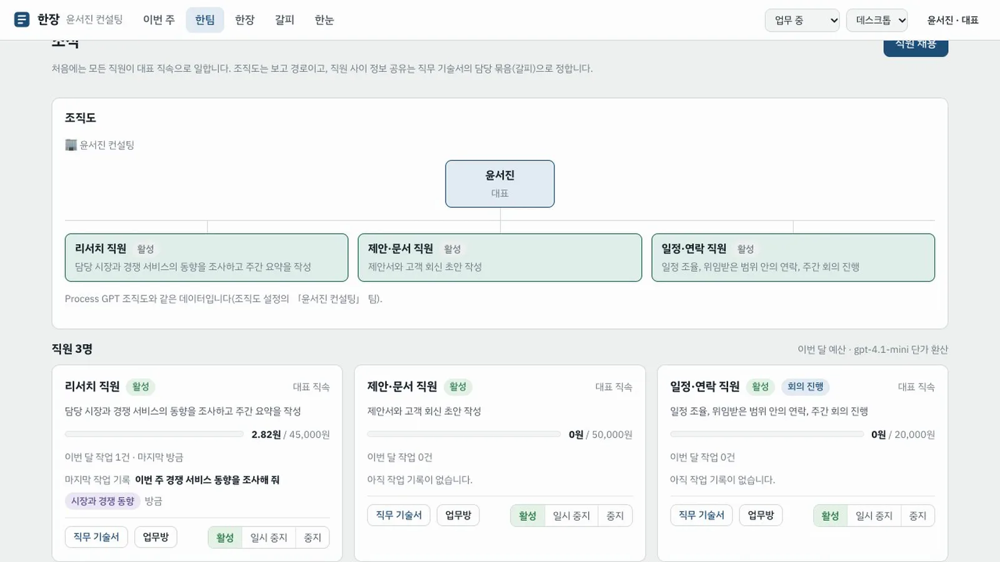

템플릿으로 AI 직원 셋을 채용하고, 직무 기술서에서 결재 기준과 월 예산을 정한 뒤, 페이지 옆 채팅방에서 첫 일을 맡깁니다.
무엇을 · 왜#
한장의 AI 직원은 직무 기술서로 만듭니다. 직무 기술서는 직원이 무엇을 하고, 무엇을 보고, 어디까지 혼자 해도 되는지를 정하는 계약서입니다. 일손을 늘리는 것보다 그 일손을 통제할 수 있는 것이 먼저이기 때문입니다.
| 직무 기술서 항목 | 무엇을 정하나 |
|---|---|
| 역할 | 맡는 업무와 기대하는 결과 |
| 담당 묶음 | 갈피에서 읽고 쓸 수 있는 맥락 묶음 |
| 사용 도구 | 연결한 도구와 외부 서비스 |
| 결재 기준 | 행동마다 불가 · 대표 승인 · 혼자 처리(기록) |
| 월 예산 | AI 사용료 상한 — 닿으면 멈추고 대표에게 알림 |
| 성과 지표 · 보고 주기 · 실행 엔진 | 평가 기준, 정기 기동과 회의 보고 시점, 실제 일을 하는 에이전트 |
채용하면 Process GPT 쪽에도 그대로 생깁니다. 에이전트 하나, 대표 회사 팀 아래의 조직도 노드 하나, 업무 대화방 하나입니다. 실제 일은 Process GPT 의 deepagents 가 그 직원의 프로필로 합니다.
따라 하기#
- 처음 화면. 직원이 없는 대표의 홈에는 아직 직원이 없습니다 안내와 이번 주 회의, 결재함 두 칸만 있습니다. 직원 채용을 누릅니다.

- 템플릿 세 가지 고르기. 리서치 직원, 제안·문서 직원, 일정·연락 직원 카드에 역할과 결재 기준, 월 예산, 담당 묶음, 보고 주기가 미리 보입니다. 리서치 직원은 외부로 메일 발송 — 불가, 유료 보고서 구매 — 대표 승인, 월 30,000원입니다. 세 카드의 고르기를 누르고 아래 3명 채용을 누릅니다.

- 조직도 확인. 한팀 화면으로 바뀌고 조직도에 대표 아래 직원 셋이 직속으로 들어갑니다. 일정·연락 직원에는 회의 진행 표시가 붙습니다. 주간 회의 안건을 모으는 직원입니다. 직원 카드마다 이번 달 예산 막대가 0원에서 시작합니다.

- 직무 기술서 열기. 리서치 직원 카드의 직무 기술서를 누릅니다. 한장 작업대에 「리서치 직원 — 직무 기술서」가 버전 1로 열리고, 오른쪽에 페이지 옆 채팅방이 열립니다.

- 결재 기준 확인. 결재 기준 표에서 행동마다 규칙을 봅니다. "중요한 일" 같은 말 대신 외부로 메일 발송, 유료 보고서 구매처럼 행동 단위로 적습니다.

- 월 예산 고치기. 직무 기술서 고치기를 누르고 월 예산을
45000으로 바꾼 뒤 변경 저장을 누릅니다. 페이지가 버전 2가 됩니다. 버전 2를 누르면 사유 「대표 수정: 월 예산 30,000원 → 45,000원」이 보입니다. 바뀐 내용은 다음 실행부터 직원의 실행 프로필(Process GPT 에이전트 설명)에 들어갑니다.
- 첫 일 맡기기. 페이지 옆 채팅방에
이번 주 경쟁 서비스 동향을 조사해 줘라고 쓰고 보내기를 누릅니다. 1~2분 안에 리서치 직원 이름으로 답이 옵니다. 답은 실제 모델이 쓰므로 매번 다릅니다.
- 작업 기록과 예산 확인. 위 막대의 한팀으로 돌아가면 리서치 직원 카드에 마지막 작업 기록(지시와 묶음 「시장과 경쟁 동향」), 이번 달 작업 1건, 예산 사용(몇 원 / 45,000원)이 보입니다.

비용은 환산값입니다
deepagents 는 사용량을 돌려주지 않습니다. 그래서 비용은 실행한 글자 수를 gpt-4.1-mini 단가(입력 0.40달러·출력 1.60달러/100만 토큰, 1달러 1,400원)로 환산합니다. 이번 달 합이 월 예산에 닿으면 직원은 일시 중지되고 대표에게 알림이 갑니다. 일시 중지된 직원에게는 지시를 보낼 수 없고, 예산을 올려야 다시 시작합니다.
PoC 의 한계
1단계의 실행 엔진은 Process GPT deepagents 하나입니다. 직원마다 Claude Code·OpenClaw 같은 다른 엔진을 고르는 것은 2단계입니다.
확인 문제#
- 채용하면 Process GPT 쪽에는 무엇이 생기나요?
- 리서치 직원이 유료 보고서를 사려면 어떻게 되나요?
- 월 예산을 이번 달 사용액보다 낮게 고치면 어떻게 되나요?
정답
- 에이전트(
users에이전트 행), 대표 회사 팀 아래의 조직도 노드, 업무 대화방이 생깁니다. 직무 기술서는 한장 페이지로 저장됩니다. - 결재 기준이 대표 승인이라, 직원은 한눈으로 승인을 요청하고 대표가 승인해야 삽니다(4장).
- 바로 한도에 닿은 것으로 보고 직원을 일시 중지하고 대표에게 알립니다. 예산을 다시 올려야 활성으로 돌릴 수 있습니다.